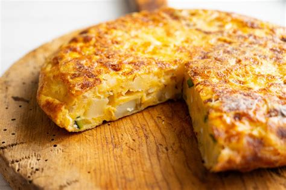

TORTILLA DE PATATAS

La tortilla de patata es uno de los platos más típicos y tradicionales de la gastronomía española. Tiene forma redonda y un color dorado por fuera, mientras que por dentro es tierna, jugosa y suave. Se elabora principalmente con patatas, huevos, aceite de oliva y sal, aunque también se le puede añadir cebolla para darle un toque más dulce.
Su sabor es delicioso y combina la suavidad del huevo con la textura de las patatas cocinadas. Se puede comer caliente o fría, como plato principal, tapa o bocadillo. Es una comida sencilla, pero muy apreciada por su sabor casero y porque se suele compartir con familiares y amigos.
Ingredientes para 4 personas
- 5 o 6 patatas medianas
- 6 huevos
- 1 cebolla (opcional)
- Aceite de oliva
- Sal al gusto
Preparación
- Pelar y cortar patatas
- Cocinar las patatas
- Batir los huevos
- Mezclar los ingredientes
- Cuajar la tortilla
- Dar la vuelta y terminar
Conoce la historia de este plato